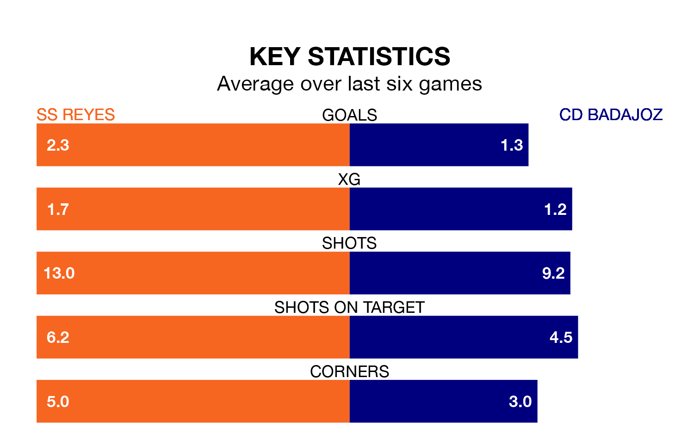

SS Reyes host CD Badajoz in Sunday's early match looking to bounce back from defeat last time out in the Segunda División RFEF Group 5.
SS Reyes, who sit second in the league after 32 games, fell to a 0-4 home defeat to CD Mensajero on April 21.
They face a Badajoz side who picked up a win in their last match, a 2-1 victory against Montijo, and who sit 15th in the table.
With 56 goals in 32 games so far this season, SS Reyes are the league's highest scorers with 1.8 goals per game. And they are conceding fewer than average, letting in 24 goals at a rate of 0.8 per game.
Badajoz, meanwhile, are below average scorers, with 1.0 goal per game, compared to a league average of 1.1. They have also conceded 1.0 goal per game.
In the last five years, SS Reyes and Badajoz have played each other on five occasions. Badajoz won two of them and they drew three times.
On average, SS Reyes scored 0.4 goals and Badajoz 1.0 in those matches.
Their last meeting was on December 17, when they played out a 0-0 draw.
The hosts are in mixed form in the Segunda División RFEF Group 5, with two wins and three draws from their last six games.
And also with two wins and three draws over that period, the away side's form is identical – they have both taken nine points from 18.
Updated: 07:59 (UTC), 26/04/24